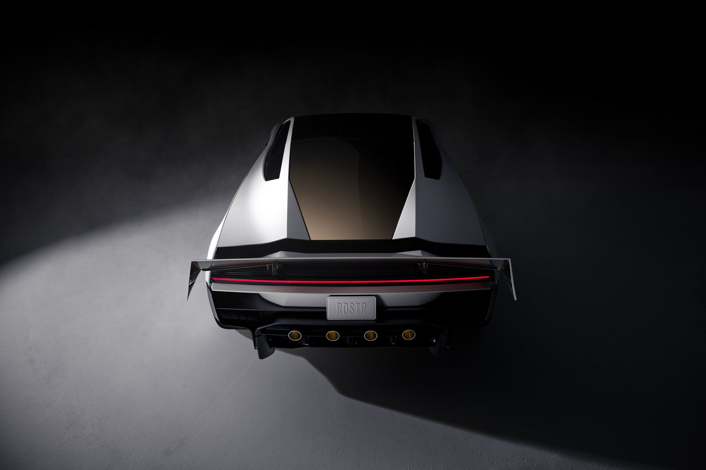
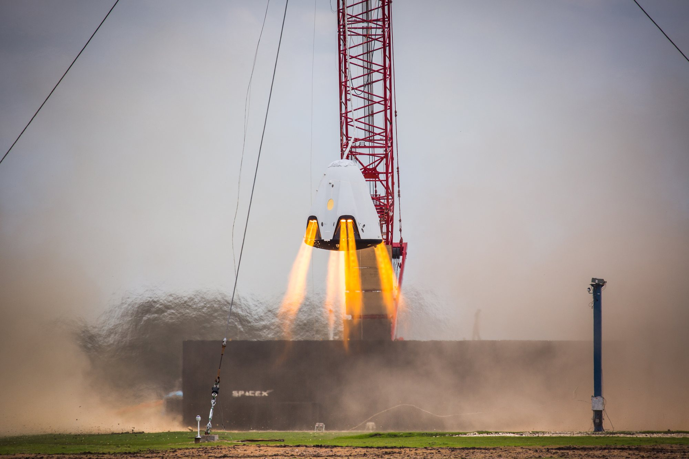
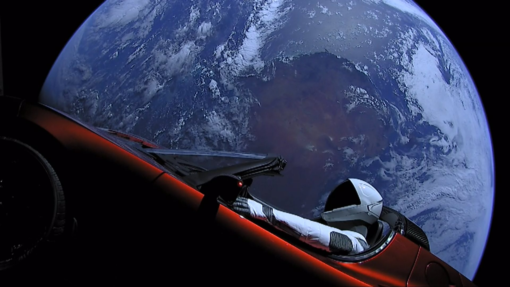

Nella notte fra giovedì 15 e venerdì 16 ottobre 2026, poco prima delle tre ora italiana, Tesla ha presentato il Roadster di seconda generazione non in un salone dell'auto ma in un poligono di prova per razzi: il Rocket Development and Test Facility di SpaceX a McGregor, in Texas, a poche decine di chilometri da Waco. In meno di mezz'ora di spettacolo trasmesso in diretta su X, un prototipo bianco è salito su una rampa alta diversi piani fino a correre a testa in giù, si è staccato, ha ruotato su sé stesso ed è sceso lentamente a terra su un cuscino di aria compressa. Poi ha saltato, avvitandosi, una fila di Model 3, Model Y, Cybertruck, Semi e Cybercab. Elon Musk lo ha definito «il culmine di un lavoro incredibile degli ingegneri di Tesla e SpaceX che hanno lavorato fianco a fianco per fare qualcosa che non avete mai visto in nessun film».
Che cosa si è visto a McGregor
La scenografia era quella di un lancio: conto alla rovescia, fumo, sibili meccanici e una rampa ricurva, simile a una pista giocattolo ingrandita fino a diventare una struttura di più piani. Il Roadster l'ha percorsa fino al tratto rovesciato restando incollato al fondo grazie a un sistema di ventole montato sotto la scocca, fornito da SpaceX, che, nei dati dichiarati, genera un risucchio fino a 2 g. In cima l'auto si è staccata e i propulsori l'hanno fatta avanzare e ruotare in un avvitamento completo, prima di frenarne la discesa fino a un appoggio morbido sull'asfalto, in una nuvola bianca.
Il secondo numero è stato il salto sopra la gamma Tesla, con quella che il responsabile dell'ingegneria dei veicoli Lars Moravy ha chiamato «un kickflip», la rotazione in volo degli skater. Musk ha spiegato che l'auto ha propulsori principali al posteriore e propulsori di controllo d'assetto lungo il perimetro: «Può sostanzialmente volare come un razzo. Può fare tonneau, ginnastica pazzesca, quello che volete». E subito dopo: «Devo dire che non è necessariamente un'auto ottimizzata per la sicurezza. Ma porta il misuratore del divertimento a 11 su 10».
Poi le accelerazioni. La prima corsa da 0 a 60 miglia orarie è stata chiusa in circa un secondo. Quando dal pubblico gli hanno ricordato di aver promesso meno di un secondo, Musk ha fatto ripetere la prova: 0,81 secondi dichiarati. Ha aggiunto che il modello di serie farà meglio e che la velocità massima, oggi indicata oltre le 230 miglia orarie (circa 370 km/h), dovrà salire: «Bisogna superare metà della velocità del suono, credo. Mach 0,5, forse un po' di più».

La parte SpaceX: aria compressa, non carburante
Il cuore della dimostrazione è un sistema che chiunque segua i razzi riconosce. I propulsori sono a gas freddo: non bruciano nulla, espellono aria stoccata ad altissima pressione, lo stesso principio che molti stadi e satelliti usano per orientarsi nel vuoto. Moravy ha indicato due serbatoi per un volume complessivo di 600 litri, con circa 250 chilogrammi d'aria, collegati a 10 ugelli. L'auto può ricaricarli da sola, senza propellenti chimici. La spinta dei propulsori forniti da SpaceX è stata indicata in oltre 80 kilonewton.
Tesla ha scritto su X che «ogni spazio utilizzabile» della vettura è riempito di serbatoi COPV, i recipienti in pressione avvolti in fibra di carbonio. È una tecnologia che SpaceX conosce bene, nel bene e nel male: è la stessa famiglia di serbatoi che portò alla perdita del Falcon 9 con il satellite Amos-6 sulla rampa nel 2016. Portarla dentro un'auto con due persone a bordo è una delle scelte che faranno discutere di più.
Il luogo non è casuale. McGregor è il banco prova di SpaceX dal 2003: lì vengono accesi i motori Merlin del Falcon 9 e i Raptor di Starship prima del volo, e lì nel 2015 il veicolo DragonFly provò a restare sospeso in aria sui suoi SuperDraco, appeso a una gru. Dieci anni dopo, nello stesso perimetro, a sollevarsi su getti controllati è stata un'automobile. SpaceX ha accompagnato la diretta con un post di due parole, «Go for launch», la formula del via libera al lancio.

Tre versioni, una sola che vola
A fine evento Tesla ha aggiornato il sito con tre allestimenti, tutti con oltre 300 miglia di autonomia (circa 480 km) e velocità massima superiore a 230 miglia orarie.
| Versione | Che cosa offre | Prenotazione |
|---|---|---|
| Performance | «Pronta per la strada», due posti, aerodinamica attiva e sistema di risucchio a più modalità | 50.000 dollari di deposito |
| Thrust | «Pronta per la pista», due posti, propulsori a gas freddo posteriori per lo 0-60 sotto il secondo | 250.000 dollari di deposito |
| Rocket | «Pronta per l'aria», un solo posto, propulsori su tutto il perimetro e «sistema di volo completo» | solo su invito |
Il prezzo non è stato annunciato. Nel 2017 il Roadster era stato presentato a partire da 200.000 dollari. Sull'omologazione Musk ha detto che sarà «un'auto vera, che va su strada», ma ha ammesso di non essere sicuro che sia «legale in tutte le giurisdizioni». È facile prevedere che la versione Rocket dovrà fare i conti sia con le regole stradali sia con quelle aeronautiche. Va notato anche che il prototipo delle acrobazie non era quello portato sul palco: le ruote erano diverse.
Il design guarda all'aviazione militare: Tesla cita il ricognitore SR-71 e il caccia F-35. L'ala posteriore si regola da sola fra una modalità ad alta resistenza e una ad alto carico ed è mossa dagli attuatori sviluppati per il robot Optimus. In abitacolo, due sedili integrati nel telaio, volante a cloche e comandi elettronici senza collegamento meccanico. All'evento era esposta anche la Lotus Esprit della Spia che mi amava, che Musk possiede. Lui ha chiuso così: «Meglio di qualsiasi auto di James Bond».

Dal Roadster nel razzo al razzo nel Roadster
Il legame fra quest'auto e SpaceX ha una data precisa: il 6 febbraio 2018 il primo Falcon Heavy portò in orbita attorno al Sole il Roadster rosso di Musk, con il manichino Starman al volante. Tesla lo ha ricordato stanotte con due righe, «Dal Roadster nel razzo al razzo nel Roadster», e Musk ha aggiunto che il suo Roadster originale «è ancora in orbita fra Marte e la Terra».
L'idea dei propulsori è di pochi mesi dopo. Nel giugno 2018 Musk scrisse che il «pacchetto SpaceX» per il nuovo Roadster avrebbe avuto una decina di piccoli propulsori disposti attorno alla carrozzeria, capaci di migliorare accelerazione, frenata e tenuta in curva, e forse di far volare l'auto. Il Roadster di seconda generazione era stato svelato a sorpresa nel novembre 2017, alla presentazione del camion Semi, con consegne promesse per il 2020: 1,9 secondi nello 0-60 e 620 miglia di autonomia. Poi i rinvii, dal 2020 fino al 2024, una data fissata per il primo aprile 2026 e saltata, un tentativo il 1° ottobre fermato dal maltempo. Chi aveva versato 50.000 dollari, o 250.000 per una delle mille Founders Series, aspetta da quasi nove anni. Il nuovo modello promette meno della metà dell'autonomia annunciata allora, ma in cambio vola.
Perché interessa anche gli investitori di SpaceX
Musk ha sempre minimizzato il peso economico del Roadster: già nel 2023 lo chiamava «una faccenda da poco» che non avrebbe spostato i conti. Il punto, stavolta, è un altro. La presentazione arriva mentre gli analisti di Barclays ipotizzano un'aggregazione fra Tesla e SpaceX e indicano un possibile annuncio già entro fine mese. Un'auto progettata insieme dalle due aziende, presentata in uno stabilimento SpaceX e raccontata da Musk come lavoro di squadra fra i loro ingegneri, è stata letta da molti come una prova generale di quell'unione. Gene Munster, socio di Deepwater Asset Management, l'ha detta così: l'evento è «l'ultimo esempio del perché Elon non vede l'ora di mettere insieme Tesla e SpaceX». Nessuna delle due società ha confermato trattative. Il prossimo appuntamento concreto sono i conti trimestrali di Tesla, il 21 ottobre.
Intanto, a Vandenberg
Un'ora prima della presentazione, alle 02:01 ora italiana del 16 ottobre, un Falcon 9 è partito dalla rampa SLC-4E della base di Vandenberg in California con la missione militare riservata USSF-481, la seconda della serie indicata come «TH». Il primo stadio B1081, al 28° volo, è atterrato sulla chiatta Of Course I Still Love You nel Pacifico: è il 671° recupero di un booster Falcon.
Che cosa seguire adesso
Tre cose. La prima è il prezzo e il calendario reale: il 2028 è una promessa, e la storia del Roadster invita alla prudenza. La seconda è l'omologazione, soprattutto della versione Rocket, che di fatto è un velivolo a decollo verticale con le ruote. La terza riguarda SpaceX: se il Roadster resterà una collaborazione tecnica isolata o diventerà il primo prodotto di un gruppo unico. Per chi segue i razzi, comunque, la notizia è già qui: la tecnologia dei sistemi di controllo d'assetto, ventole e serbatoi in pressione, è uscita dal poligono ed è entrata in un'auto.
Il dossier su Starshield in Ucraina e il limite di velocità sui droni passa all'archivio Notizie.
Fonti pubbliche e tracce
Ultimo aggiornamento editoriale: 16 ottobre 2026. Nel corpo non si ripete la fonte a ogni frase: le tracce sono raccolte qui. Le citazioni sono traduzioni redazionali. Prestazioni, spinta e capacità dei serbatoi sono dati dichiarati da Tesla durante l'evento.
- Tesla su X, 15 ottobre 2026: diretta della presentazione del Roadster.
- Tesla su X, 16 ottobre 2026: aerodinamica attiva, sistema di risucchio, propulsori a gas freddo, foto ufficiali.
- Tesla su X, 16 ottobre 2026: design ispirato a SR-71 e F-35.
- Tesla su X, 16 ottobre 2026: modalità pista e ala mossa dagli attuatori Optimus.
- Tesla su X, 16 ottobre 2026: «Roadster and a rocket have shared a ride before».
- Tesla su X, 16 ottobre 2026: «From Roadster in a rocket, to rocket in a Roadster».
- Elon Musk su X, 16 ottobre 2026: il Roadster originale ancora in orbita.
- SpaceX su X, 16 ottobre 2026: «Go for launch» sulla diretta Tesla.
- Reuters via Mint, 15-16 ottobre 2026: luogo, dichiarazioni di Musk e Moravy, depositi, commento di Munster, conti Tesla del 21 ottobre.
- TechCrunch, 15 ottobre 2026: tre versioni, 10 propulsori, 600 litri, COPV, storia dei rinvii.
- The Verge, 16 ottobre 2026: ventole SpaceX da 2 g, 250 kg d'aria, 0,81 secondi, omologazione.
- Car and Driver, 15 ottobre 2026: spinta oltre 80 kN, prove di accelerazione, ala e ventole, prototipi diversi.
- Engadget, 15 ottobre 2026: diretta dell'evento, nota Barclays su Tesla e SpaceX.
- Spaceflight Now, 15-16 ottobre 2026: lancio USSF-481, booster B1081, 671° atterraggio.
Fotografie utilizzabili
- Copertina e foto del posteriore: immagini ufficiali Tesla pubblicate su X il 16 ottobre 2026, credito Tesla · uso editoriale non commerciale. Non esistono ancora foto a licenza libera dell'evento.
- Starman in orbita e DragonFly a McGregor: foto SpaceX, CC0, Wikimedia Commons. Dettagli in
assets_roadster_spacex/crediti_immagini.md.